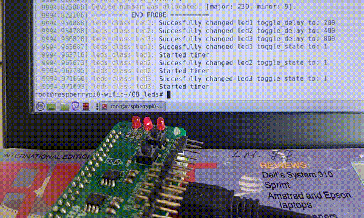

We’d like to make those LEDs blink. Using timers and device attributes, i.e. files in SysFs, we can have full control over the blinking of the LEDs.
We will introduce two new concepts: attributes and timers.
Kernel timers will be used to toggle some GPIO outputs. Attributes will be used to configure the toggling, delay and state, from user space.
We refer to the Linux documentation for Platform Devices and Drivers.
Framework-specific data structures enclose a
driver/bus/device-datastructure, and provide custom probe
and remove operations. These framework-specific
probe and remove can be invoked (if non-null!)
by using the container-of method on the inner
driver/bus/device-specific attribute field, c.f. Overview of the
device model from sysfs in LDDD2 p501-503.
We refer to section Getting deeper inside LDM in LDDD2 p473, for a definition of sysfs and Attributes. Section Working with non-default attributes p481. Section Concept of attribute group p492 as an alternative to having to call sysfs_createfile() for each attribute.
We define the gpio_toggle read-write attribute.
DEVICE_ATTR_RW(gpio_toggle);DEVICE_ATTR_RW is a preprocessor macro defined as
follows.
#define DEVICE_ATTR_RW(_name) \
struct device_attribute dev_attr_##_name = __ATTR_RW(_name)
#define __ATTR_RW(_name) __ATTR(_name, 0644, _name##_show, _name##_store)
#define __ATTR(_name, _mode, _show, _store) { \
.attr = {.name = __stringify(_name), \
.mode = VERIFY_OCTAL_PERMISSIONS(_mode) }, \
.show = _show, \
.store = _store, \
}For our gpio_toggle attribute, the preprocessor macro
invocation is substituted with
struct device_attribute dev_attr_gpio_toggle = {
.attr = {
.name = "gpio_toggle",
.mode = VERIFY_OCTAL_PERMISSIONS(0644)
},
.show = gpio_toggle_show,
.store = gpio_toggle_store,
};The _mode verification can be omitted here.
The delay attribute can be defined similarly.
DEVICE_ATTR_RW(gpio_delay);We will implement the show and store
operations in the next section.
Next, we populate an array with the attributes defined above.
static struct attribute *blah_attrs[] = {
&dev_attr_gpio_toggle.attr,
&dev_attr_gpio_delay.attr,
NULL,
};ATTRIBUTE_GROUPS(blah);The preprocessor macro is defined as follows.
#define ATTRIBUTE_GROUPS(_name) \
static const struct attribute_group _name##_group = { \
.attrs = _name##_attrs, \
}; \
__ATTRIBUTE_GROUPS(_name)
#define __ATTRIBUTE_GROUPS(_name) \
static const struct attribute_group *_name##_groups[] = { \
&_name##_group, \
NULL, \
}So for the attribute group blah, the macro invocation
translates into:
static const struct attribute_group blah_group = {
.attrs = blah_attrs,
};
static const struct attribute_group *blah_groups[] = {
&blah_group,
NULL,
};Finally, during the init operation, the
dev_groups field of the class created for our character
device needs to be updated as well.
class = class_create(THIS_MODULE, drv->class_name);
if ((err = IS_ERR(drv->class)))
ERRGOTO(class_create_failed, "class_create: FAIL\n");
class->dev_groups = blah_groups;The store operation is shown below in a condensed version.
We use dev_get_drvdata to retrieve our custom
gpio_device_info structure, in which the current
toggle-state is stored along with other information describing the
device. It is made possible because we passed a pointer to that custom
structure when the device was registered during the probe
operation using device_create().
Next, the input buffer contains the string representation of the
value which was written to the toggle property. That input
string is converted to an integer value, which will be the new
toggle-state, i.e on if the value is non-zero, and off
if the value is zero. Two situations are of interest here:
Finally the toggle-state is updated with the new value and we return
the size of the input buffer. The timer parts of
the code that we’ve omitted here will be detailed further below.
static ssize_t gpio_toggle_store(
struct device *pdev, struct device_attribute *attr,
const char *buf, size_t size)
{
int new_toggle_state, err;
gpio_device_info *gpio = (gpio_device_info *)dev_get_drvdata(pdev);
if ((err = kstrtoint(buf, 0, &new_toggle_state)) < 0)
{
dev_err(pdev, "unable to parse %s\n", buf);
return err;
}
if (gpio->toggle_state == 0 && new_toggle_state != 0)
{
[ SETUP A NEW TIMER ]
[ MODIFY THE NEW TIMER ]
}
else if (gpio->toggle_state != 0 && new_toggle_state == 0)
{
[ DELETE THE TIMER ]
}
gpio->toggle_state = new_toggle_state;
return size;
}The show function is almost trivial since its only
purpose is to return a string representation of the the
toggle-state.
static ssize_t gpio_toggle_show(
struct device *pdev, struct device_attribute *attr, char *buf)
{
gpio_device_info *gpio = (gpio_device_info *)dev_get_drvdata(pdev);
return sprintf(buf, "%i\n", gpio->toggle_state);
}The store operation of the delay attribute updates
the toggle speed of the associated LED device. Note that we let
kstrtoint() update gpio->toggle_delay with
the converted value (in milliseconds). If the integer convertion fails,
the toggle_delay field will be left unchanged (we checked
with the sources in lib/kstrtox.c :) ).
static ssize_t gpio_delay_store(
struct device *pdev, struct device_attribute *attr,
const char *buf, size_t size)
{
int err;
gpio_device_info *gpio = (gpio_device_info *)dev_get_drvdata(pdev);
if ((err = kstrtoint(buf, 0, &gpio->toggle_delay)) < 0)
{
dev_err(pdev, "unable to parse %s\n", buf);
return err;
}
return size;
}The show operation of the delay operation is a clone of the toggle version.
static ssize_t gpio_delay_show(
struct device *dev, struct device_attribute *attr, char *buf)
{
gpio_device_info *gpio = (gpio_device_info *)dev_get_drvdata(dev);
return sprintf(buf, "%i\n", gpio->toggle_delay);
}The timer functionality that we’ll use is described in section Kernel timer APIs of LDDD2 p.88.
The jiffies global variable is incremented
HZ times every second. The value of HZ can be
retrieved as follows on the RPi:
$ zcat /proc/config.gz | grep CONFIG_HZ
[...]
CONFIG_HZ_1000=y
CONFIG_HZ=1000The value of HZ on the RPi is 1000, so
jiffies is incremented every millisecond.
When the toggle property of a device is changed from
off to on, a new timer is created within the
store operation, using timer_setup(). Our
custom gpio_device_info used in the probe and
show operations above also contains timer and
callback fields. The timer field is
initialized by timer_setup(). The callback
function is meant to be invoked every time the timer expires. The
callback field is set during the probe
operation.
timer_setup(&gpio->timer, gpio->callback, 0);We will see below, in the Overlays section, how we chose to connect each of the three devices with their respective timer callbacks.
Still in store, immediately after a timer has been
created, we need to set its initial expiration delay, i.e. the delay
before the timer callback will be invoked. The value of the
delay property for a given device is converted to jiffies,
and added to the current jiffies values. Our new timer will
now expire in toggle_delay milliseconds. Invoking
mod_timer() activates the timer.
mod_timer(&gpio->timer, jiffies + msecs_to_jiffies(gpio->toggle_delay));So long as a device’s toggle property is on, the
associated timer is active and needs to be updated with a fresh delay
each time the delay expires. Our driver handles three devices, LED1,
LED2, and LED3. Each LED has its toggle state and
delay. Our gpio_device_info structure has a
struct timer_list, which is also the one passed to the
led_timer_callback. A pointer to the containing
gpio_device_info can be retrieve using the
from_timer macro, which is an application of the
container_of pattern.
void led_timer_callback(struct timer_list *t)
{
// Retrieve the containing datastructure
gpio_device_info *info = from_timer(info, t, timer);
// Update the timer
mod_timer(&info->timer, jiffies + msecs_to_jiffies(info->toggle_delay));
// Toggle the LED on/off
int val = gpio_get_value(info->gpio_nr) ? 1 : 0;
gpio_set_value(info->gpio_nr, 1 - val);
}Ideally the timer callback should be invoked every delay milliseconds. We know, however, from previous experiments with interrupt services routines, that the waiting time until the ISR is executed, and in particular its bottom half (the timer callback), can be delayed for an arbitrary amount of time, even milliseconds.
Furthermore, the handler itself takes time to execute, so it would be a misconception to believe that the update method above would lead to the timer callback being invoked every delay milliseconds. So the method used to update the timer will certainly lead to a certain amount of drifting.
As an example, assuming that the delay is 200 ms, the time between each callback invocation will be
200 ms + time from interrupt to callback invokation + time to execute the callbackWhen the toggle property of a device is changed from
on to off, the timer is released with
del_timer(), which removes the timer from the timer
management queue. Since our code is running on a single core RPi,
we don’t really need to use del_timer_sync rather than
del_timer.
del_timer(&gpio->timer)As mentioned above, updating the timer with a fixed amount of jiffies will inevitably lead to a certain amount of drifting. An alternative method is shown below.
void timer_callback_corrected(struct timer_list *t)
{
gpio_device_info *info = from_timer(info, t, timer);
unsigned long dj = msecs_to_jiffies(info->toggle_delay);
info->next_jiffies += dj;
while (jiffies > info->next_jiffies)
{
info->next_jiffies += dj;
}
mod_timer(&info->timer, info->next_jiffies);
int val = gpio_get_value(info->gpio_nr) ? 1 : 0;
gpio_set_value(info->gpio_nr, 1 - val);
}The expires parameter of mod_timer() is set
to the previous expires values plus the ms delay
converted to jiffies. If the new expires is already a time
in the past, then we keep incrementing it with delay until it
becomes a value in the future. As a consequence, the period of the
toggling should be delay, even if it means that we have to drop
some toggles along the way.
There are at different approaches when defining a DT overlay for the three LEDS.
gpios = <&gpio 26 1>, <&gpio 21 1>, <&gpio 21 1>;.When choosing the first approach, the probe operation is
invoked only once. As a consequence the probe operation can
become rather convoluted, with for loops to initialize each
device, and error management becoming complex and error-prone.
We choose the second approach rather than the third because we are not interested in inserting the LEDs separately. Moreover, each DT fragment triggers a separate probe invocation. So if adding the LED2 overlay fails, i.e. if the probe operation for LED2 ends up returning a negative number, then LED1 and LED3 mays still be added successfully. When the kernel module or the DT overlay are removed, then only the LED1 and LED3 fragments will be removed form the device tree, and the kernel will not crash trying to remove a fragment for LED2 that was never added properly.
/dts-v1/;
/plugin/;
/ {
compatible = "brcm,bcm2835";
fragment@0 {
target-path = "/";
__overlay__ {
led1_drv: led1_drv {
compatible = "ase, led1";
status = "okay";
gpios = <&gpio 26 1>;
default_output_value = <0x1>;
};
};
};
fragment@1 {
target-path = "/";
__overlay__ {
led2_drv: led2_drv {
compatible = "ase, led2";
status = "okay";
gpios = <&gpio 20 1>;
default_output_value = <0x1>;
};
};
};
fragment@2 {
target-path = "/";
__overlay__ {
led3_drv: led3_drv {
compatible = "ase, led3";
status = "okay";
gpios = <&gpio 21 1>;
default_output_value = <0x1>;
};
};
};
};We wrote a small script that adds a device tree overlay for the LEDS, inserts the driver, and finally makes the LEDs blink at different toggle speeds.
insmod leds_drv.ko
dtoverlay -d . leds_drv.dtbo
echo 200 > /sys/class/leds_class/led1/gpio_delay
echo 400 > /sys/class/leds_class/led2/gpio_delay
echo 800 > /sys/class/leds_class/led3/gpio_delay
echo 1 > /sys/class/leds_class/led1/gpio_toggle
echo 1 > /sys/class/leds_class/led2/gpio_toggle
echo 1 > /sys/class/leds_class/led3/gpio_toggle
Straightforward modifications to the above-described overlays allow us to use GPIO19 and GPIO13 of the RPi instead of the three LEDs.
We will compare the two time update strategies. GPIO19 will be triggered using the corrected strategy, while GPIO13 will be triggered by the naive timer update strategy.
GPIO19 is connected to scope 1 of the Analog Discovery, and GPIO13 is connected to scope 2. Both timers are set to be triggered each 200 ms.
echo 200 > /sys/class/leds_class/gpio19/gpio_delay
echo 200 > /sys/class/leds_class/gpio13/gpio_delay
echo 1 > /sys/class/leds_class/gpio19/gpio_toggle
echo 1 > /sys/class/leds_class/gpio13/gpio_toggleAs expected the signal of the uncorrected timer (blue) drifts slowly from the corrected one (orange).
Figure 1 shows that the period is pretty much 200 ms while figure 2 shows that the period is more like 208 ms.